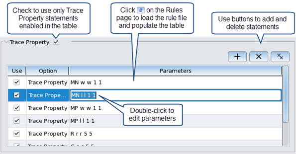

Changing Trace Property Statements
Corresponding SVRF statement: Trace Property
You can use the Trace Properties option in Calibre Interactive to override the Trace Property statements in your rule file. You can add new statements, edit existing statements, and disable statements. This feature is available in Calibre Interactive nmLVS and Calibre Interactive PERC on the Options page.
Prerequisites
Calibre Interactive nmLVS or Calibre Interactive PERC is open. See “Setting Up a Calibre Interactive nmLVS Run” and “Calibre Interactive PERC”.
A rule file is specified on the Rules page.
Procedure
- Use the following table to
determine the steps to take depending on the action you want:Note:
Trace Property statements that include trace property computation procedures are not loaded into the Trace Property table.
Table 1. Changing Trace Property Statements in Calibre Interactive nmLVS Action
Steps
Disable all Trace Property statements in the rule file.
Do one of the following:
Do not load the rule file to populate the Trace Property table.
If the Trace Property table is already populated, disable all checkboxes in the Use column or click
 to remove all statements.
to remove all statements.
Disable or enable specific Trace Property statements.
Click
 (Load)
on the Rules page to populate the table.
(Load)
on the Rules page to populate the table. Use the checkboxes in the Use column to select the statements that are included in the run.
Edit the parameters for a Trace Property statement.
Click
(Load)
on the Rules page to populate the table. Click in the Parameters column and edit the parameters.
Add a new Trace Property statement.
(Optional) Click
(Load)
on the Rules page to populate the table with rule file statements.
Do this if you want to run the rule file Trace Property statements
in addition to the new statement. Click to add a new statement, then fill in the parameters in the Parameters column.
Figure 1. Changing Trace Property Statements
Results
When the “Trace Property” checkbox is checked, only the statements enabled in the Trace Property table are used in the Calibre run.
When you load a rule file, all corresponding GUI settings are set to the settings in the rule file. Therefore, any custom settings in the Trace Property table are reset to rule file settings when you load the rule file.